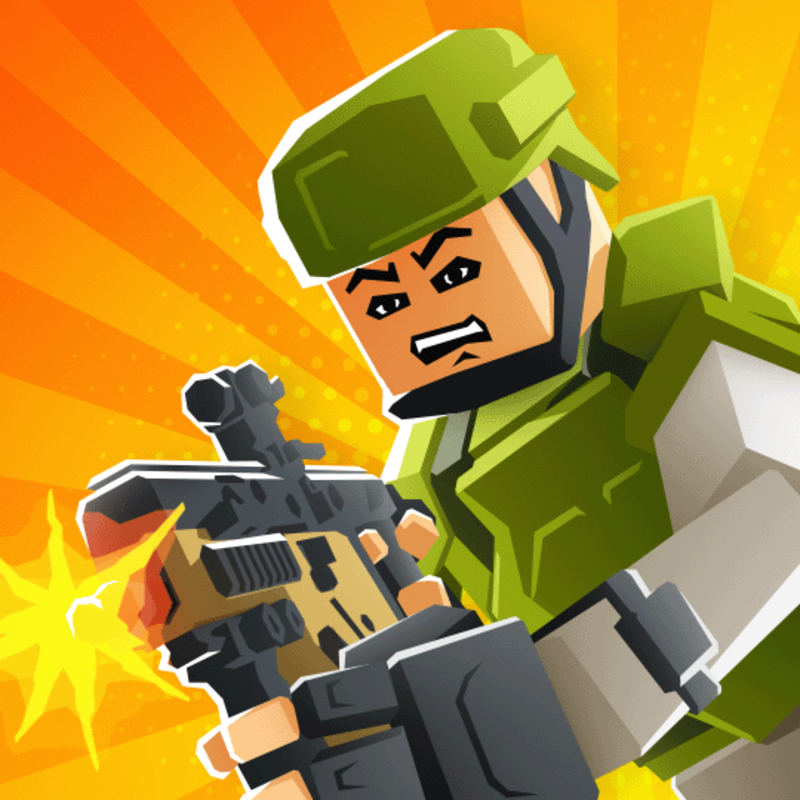

Kour
Itch.io requires this game to be played on its own website. Open the developer's page to play.
Open on itch.io ↗
Itch.io requires this game to be played on its own website. Open the developer's page to play.
Open on itch.io ↗